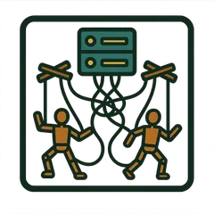
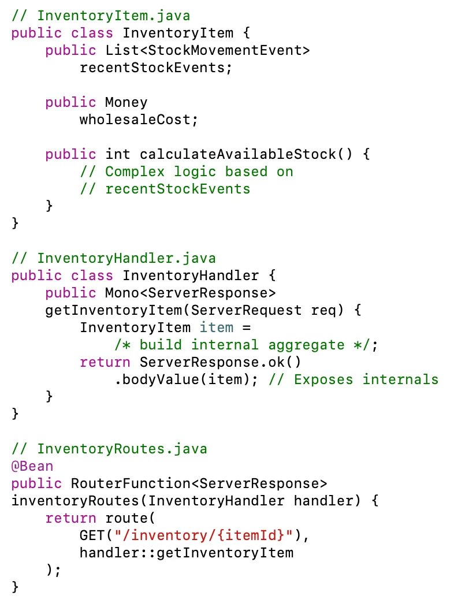
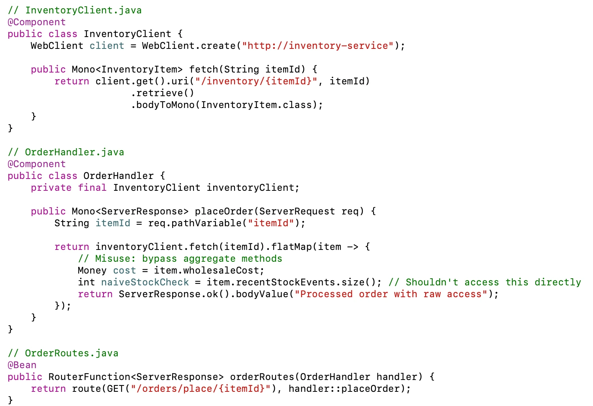
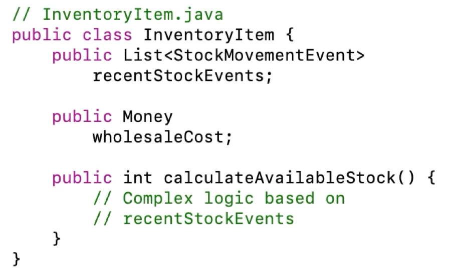
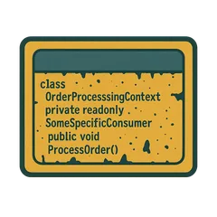
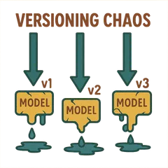
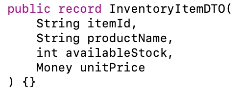
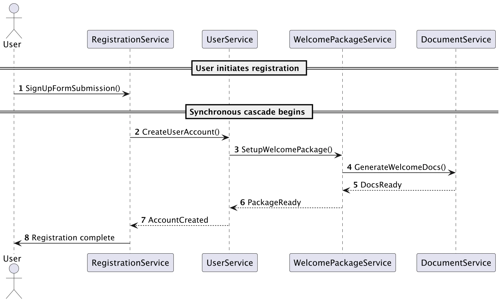
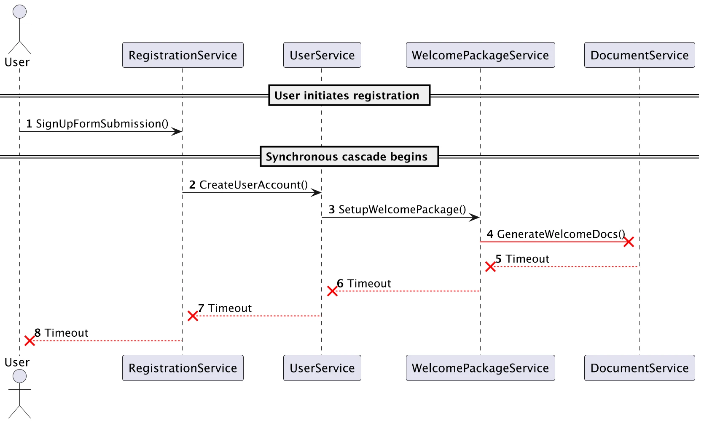
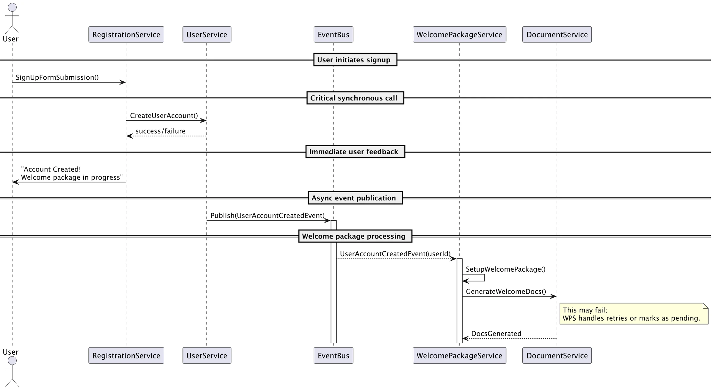

S1: Lost in Translation
Episode 1
The “Status” Shuffle
What “complete” really means?
Charting the Uncharted
DDD Europe
Prem Chandrasekaran
June 2025
The Problem
Business domains are complex and abstract, making software hard to design
DDD’s Promise
Break down complexity
by dividing the
into smaller parts —
with clear boundaries —
The broad business problem area
The broad business problem area
Online Retail
A smaller, well-defined area of knowledge or responsibility within a domain
The broad business problem area
A smaller, well-defined area of knowledge or responsibility within a domain
Online Retail
Ordering / Checkout
Product Catalog
Payment Processing
Inventory & Fulfillment
Customer Service / Support
Customer Accounts & Identity
Marketing & Recommendations
The broad business problem area
A smaller, well-defined area of knowledge or responsibility within a domain
Parts of the solution with explicit model and language boundaries
A
B
C
Subdomain
Bounded Context
The broad business problem area
A smaller, well-defined area of knowledge or responsibility within a domain
Parts of the solution with explicit model and language boundaries
Online Retail
Ordering / Checkout
Product Catalog
Payment Processing
Inventory & Fulfillment
Customer Service / Support
Customer Accounts & Identity
Marketing & Recommendations
The broad business problem area
A smaller, well-defined area of knowledge or responsibility within a domain
Parts of the solution with explicit model and language boundaries
Online Retail
Ordering / Checkout
Product Catalog
Payment Processing
Inventory & Fulfillment
Customer Service / Support
Customer Accounts & Identity
Marketing & Recommendations
The broad business problem area
A smaller, well-defined area of knowledge or responsibility within a domain
Parts of the solution with explicit model and language boundaries
Online Retail
Ordering / Checkout
Product Catalog
Payment Processing
Inventory & Fulfillment
Customer Service / Support
Customer Accounts & Identity
Marketing & Recommendations
Spotting bounded context pitfalls
Part 2
An episodic guide to boundary design
The Situation
The Impact
The Fix
S1: Lost in Translation
Episode 1
What “complete” really means?
Team Alpha’s “Complete” conundrum
When “Complete” causes complete chaos!
The Problem
The term “Complete” is dangerously ambiguous. It holds multiple, conflicting definitions within this single team and their Order Processing context.
So What?
Code conflicts emerge when “Complete” means different things. Premature emails go out before packages ship.
Teams debate endlessly over what should be crystal clear. Hours vanish explaining the unexplainable.
Reports become meaningless when built on ambiguous data. Business decisions suffer from shaky foundations.
Trust erodes when support says “Complete” but packages haven’t shipped. New team members inherit the confusion.
Create clarity with a Ubiquitous Language
PaymentVerified: Customer payment confirmed.ItemsAllocated: Stock reserved for the order.OrderShipped: Package dispatched, tracking available.ShipmentDelivered: Confirmed delivery to customer.ReturnWindowActive: Period during which returns are accepted.OrderClosed: Final state, post-return window or successful resolution.S1: Lost in Translation
Episode 2
Is your “Customer” my “Customer”?
The cross-department “Customer” conundrum
Sales
context
Shipping
context
When a “Customer” isn’t ready for prime time (Shipping)!
Sales
context
Customer
Shipping
context
⚠️⁇Customer⁇⚠️
The Problem
The term "Customer" bleeds from the Sales Context (where it means a contractual entity) into the Shipping Context (where it implies a logistically ready entity) without translation or acknowledging different contextual needs.
So What?
Shipping can't proceed, orders get stuck.
Warehouse staff might prepare for an order that isn't ready for them.
"Sales just throws stuff over the wall!" vs. "Why can't Shipping just figure it out?!"
Inaccurate forecasting for warehouse workload
Define boundaries & translate!
Sales
context
Shipping
context
Customer
LogisticsProspect
ACL
U
D
LogisticsProspect, ShippableOrder, Recipient, etc.).S1: Lost in Translation
Episode 3
When “One Size Fits All”… Fits No One
The all-encompassing “Party” problem
Party' Model. A 'Party' can be an individual, organization, employee, customer, vendor, or internal department. The 'Party' object contains 275 attributes, including 'DateOfBirth' (for individuals), 'VATNumber' (for organizations), 'EmployeeID' (for staff), 'LoyaltyTier' (for customers), and 'ForkliftCertificationExpiry' (for specific warehouse roles)Party,' we now have to consider 'ForkliftCertificationExpiry'? That's... a lot of irrelevant data for our analytics.Party' representing a 'LoadingBayDoor' (an internal operational entity) now needs a 'DateOfBirth' and 'LoyaltyTier'? This model is making simple things very complicated for us.Employee' structure with its specific payroll and benefits fields into this generic 'Party' model is a nightmare for reporting.The tyranny of the universal model!
😧
🙄
😵💫
The Problem
A single, overly generalized model ("Party") is forced onto diverse Bounded Contexts, each with its own specific needs, language, and understanding of similar-but-different concepts (e.g., a website visitor vs. a loading bay door vs. an employee).
So What?
Models and systems become unnecessarily large and complex, carrying tons of irrelevant data for any given context.
The specific nuances of "Employee" in HR or "AutomatedGuidedVehicle" in the Warehouse are lost in the generic "Party."
Teams struggle to map their specific needs to the generic model, or work around its limitations.
Changing the "Universal Model" becomes a monumental task affecting everyone, stifling innovation in individual contexts.
Embrace context-specific languages!
❌
😅
😅
😅
Avoid creating the one ring to rule them all
Embrace context-specific languages!
S2: Boundary Blunders
Episode 1
When your service tries to be a universe
The “Monolith Maximus” service
BillingEngine directly reads user data, and the MarketingCampaigns module has some weird coupling to user profile flags. A change there last year broke reporting for a week.OrderProcessing? It's a top priority for Q3.ProductCatalog for eligibility, UserProfiles for credit checks, BillingEngine for new payment schedules, and ReportingSuite for new metrics. Given the dependencies in 'Monolith Maximus', that's a 6-month project, best case, with extensive regression.The “Big Ball of Mud” context – too entangled to evolve!
The Problem
The "CoreBusinessPlatformService" is a "Big Ball of Mud" Bounded Context. It incorrectly bundles numerous distinct business domains (User Management, Product Catalog, Ordering, Billing, Marketing, etc.) into a single, tightly coupled monster.
So What?
Even small changes require understanding a vast, interconnected codebase, leading to long lead times (Luis's 6-month estimate).
A bug in a less critical part (e.g., Marketing Campaigns) can destabilize core functions (e.g., Billing). Every deployment is a nail-biter.
No single developer can reasonably understand the entire system. Onboarding is a nightmare.
You can't scale Billing independently of User Profiles or Marketing if they're all one deployment unit.
Find the seams, define clear contexts!
S2: Boundary Blunders
Episode 2
When you just have slices of tech
The “Horizontal Slice” hangup
UserInterfaceContext": "Okay, we'll add the field to the screen in our context. We'll call the BusinessLogicContext to handle it."DataAccessContext to save it.CountryOfOrigin'Technical layers aren't business boundaries!
Manage Products
Manage Orders
The Problem
Bounded Contexts are mistakenly aligned with technical layers (UI, Logic, Data) instead of cohesive business domain capabilities (e.g., Product Management, Order Management).
So What?
Most business features require changes across all these "technical contexts," defeating the purpose of independent evolution.
You often can't deploy the "UI Context" without deploying the corresponding "Business Logic Context" and "Data Access Context" changes.
No single team owns a business capability end-to-end. Product domain logic is smeared across layers, owned by different specialist teams.
Constant hand-offs and coordination between layer-teams for every feature.
Slice vertically, not horizontally!
Manage Products
Manage Orders
S2: Boundary Blunders
Episode 3
When your “microservices” are just…
microscopic problems
Super-decomposed e-commerce platform
Note: other services are omitted for brevity
The “Atomized Order” fiasco
CreateOrderShellService, then calls out to ValidateCustomerCreditService, which might call CustomerDetailsService, then it goes to CheckProductAvailabilityService, which pings ProductDetailsService and InventoryLedgerService... (continues listing several more tiny services)... It's about 15 tiny service hops for one order.When bounded contexts are too granular & chatty!
The Problem
Bounded Contexts (and the microservices implementing them) are defined too granularly ("nanoservices"). Cohesive business logic that belongs together is split across too many tiny, interdependent pieces.
So What?
Many network hops for a single business operation drastically increase response times and points of failure.
Despite being separate services, they are so tightly coupled through synchronous calls that a failure in one often cascades, bringing down the whole process. They can't be deployed or changed independently in practice.
Managing, deploying, monitoring, and debugging hundreds or thousands of tiny services is an immense operational burden (Sara's nightmare).
A single business concept (like an "Order" or a "Product") becomes fragmented, making it hard to understand or change holistically.
Find the right “altitude” – cohesive, not microscopic, contexts!
OrderTakingContext
PaymentProcessing
InventoryManagement
S2: Boundary Blunders
Episode 4
Is your secret sauce
drowning in the generic soup?
The “Customer Success Hub” overreach
Churn Prediction Engine is our #1 strategic asset! We need to iterate on its AI model daily to stay ahead!CustomerSuccessHub also manages all the 'Helpful Tip' email campaigns. Marketing just requested a major redesign of all email templates, and that's a huge chunk of work for the team this sprint because it's the same service.Churn Prediction Engine really needs dedicated GPU resources and a specialized data pipeline. But the CustomerSuccessHub runs on general-purpose servers optimized for the web traffic of the Onboarding Wizard and Feedback Forms.CustomerSuccessHub codebase is so large, and I have to be careful not to break anything related to the Churn Engine by mistake.Core domain chart
High
Complexity
Low
Low
Business Differentiation
High
When your core domain gets treated like common ground.
The Problem
The "CustomerSuccessHub" Bounded Context ignores subdomain cohesion. It lumps a strategically critical Core Domain (the Churn Prediction Engine) with routine Supporting (Onboarding, Feedback Forms) and low-value Generic (KB Sync, Tip Emails) subdomains, treating them all as equals.
So What?
The unique Churn Prediction Engine doesn't receive the specialized focus, talent, investment, or infrastructure it desperately needs to excel.
Critical enhancements to the Core are delayed or deprioritized due to the urgent (but less strategically important) needs of Generic/Supporting features.
The Core Domain is often forced to conform to the lowest common denominator in terms of technology, architecture, and deployment practices suitable for the more generic parts.
Top engineering and data science talent may be diverted to maintaining less critical functionalities, leading to frustration and underutilization of skills.
Cherish your core, strategically separate the rest!
CustomerSuccessHub
U
D
ACL
OHS
U
D
S3: Exposed & Entangled
Episode 1
When sharing data
means sharing headaches
The “One Big Database” story
PreferredDeliveryTimezone' column to the Addresses table for our ShippingLogisticsContext to improve delivery scheduling.CustomerBillingContext reads the Addresses table for invoicing. If you add a nullable column, our existing address validation logic might throw errors, or worse, silently fail if the ORM gets confused. We need to test that extensively.Addresses requires downtime for schema migration, affecting both systems. Plus, the Shipments table is already huge and under heavy load from both contexts. Performance is a constant worry.Shared database: the ultimate hidden monolith
The Problem
Different bounded contexts are directly coupled through a shared database schema. This makes the database a central point of contention and a hidden dependency integrator.
So What?
Fear of breaking another context stifles schema evolution. One team's progress is hostage to another's
Database changes often require all dependent services to be deployed simultaneously, negating independent deployability.

A change made for one context can unknowingly break functionality or performance in another.
Heavy load or inefficient queries from one context can cripple others sharing the database.
Data sovereignty – each context captains its own ship!
❌
AddressUpdatedEvent, ShipmentCreatedEvent). Subscribing contexts can maintain their own local read-models.S3: Exposed & Entangled
Episode 2
When your internals
aren't so private anymore!
The “Tell-All” API
InventoryContext

OrderProcessingContext

The “Tell-All” API
InventoryContext
OrderProcessingContext
recentStockEvents internally – using a new compressed format. It'll improve our performance significantly! I'm refactoring the InventoryItem class.OrderProcessingContext directly reads the recentStockEvents list from the InventoryItem object your API returns. If you change that structure, our order validation logic will completely break!calculateAvailableStock() if you need that.InventoryItem kingdom, raw and unfiltered. Omar's team is simply using the detailed map you provided. Your internal refactoring is now an external breaking change.Exposing internal models: coupling by indecent exposure!

Don’t leave your kimono open!
The Problem
The InventoryContext (Provider) exposes its rich, internal domain model (InventoryItem Aggregate) directly through its API, rather than a dedicated, stable Data Transfer Object (DTO). Consumers become tightly coupled to these private implementation details.
So What?
The Inventory team is paralyzed. They can't refactor or improve their internal InventoryItem model without breaking the Order Processing team
The fundamental OO principle of hiding implementation details is broken. The provider's "insides" are public knowledge.

Order Processing now depends on things like the exact naming and structure of recentStockEvents, which it should never have known about.

A small, internal change in Inventory can cascade and break Order Processing.
Speak through stable public interfaces!

AddressUpdatedEvent, ShipmentCreatedEvent). Subscribing contexts can maintain their own local read-models.S3: Exposed & Entangled
Episode 3
When real-time calls
create real-time system failures
The “House of Cards” architecture

The “House of Cards” architecture

The synchronous cascade catastrophe
RegistrationService starts a sequence. It synchronously calls UserService to create the account. If that's okay, UserService then synchronously calls WelcomePackageService. That service, in turn, synchronously calls DocumentService to generate personalized docs. (Pointing to the successful flow diagram). If every service in this chain responds promptly, like this, Sarah gets 'Registration Complete!'DocumentService has a problem, like it did in staging yesterday? It timed out, and the whole registration seemed to fail even though the user account was probably made...DocumentService times out, as shown here, that timeout error ripples all the way back. WelcomePackageService fails because it was waiting. Then UserService has an issue, and ultimately RegistrationService has to report a failure to Sarah, even if her core user account was created before DocumentService choked.The distributed monolith: separate services, shared (and brittle) fate!
The Problem
Services are chained together through deep, synchronous, blocking calls. A failure or significant slowdown in any single service within the chain directly impacts all upstream services, creating a brittle, monolithic failure behavior.
So What?
A problem in a single component brings down the entire registration flow. One service's hiccup becomes everyone's outage.
The overall success of registration isn't just dependent on RegistrationService; it's RegistrationService AND several others all being up and fast, simultaneously.
The user either waits excessively or gets a confusing failure message, potentially after some parts of the process (like account creation) have already succeeded.
If UserService creates an account but DocumentService fails, is the user half-registered? Complex rollback logic across services is needed but rarely perfect.
Break the chains with asynchronous events & flows!

Break the chains with asynchronous events & flows!
UserAccountCreatedEvent), publish an event.WelcomePackageService and DocumentService can react to these events at their own pace, with their own retry logic.Is that it???
Summer 2026